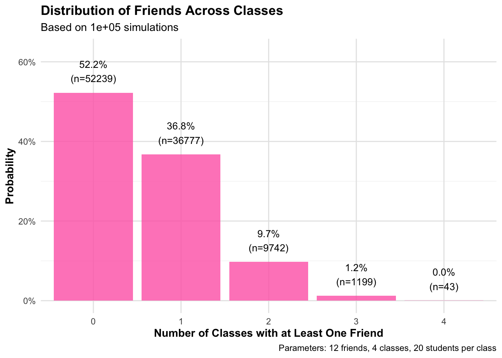

# Load necessary libraries
# Load necessary libraries quietly
suppressPackageStartupMessages(library(tidyverse))
suppressPackageStartupMessages(library(scales)) # For better axis formatting
# Set seed for reproducibility
set.seed(123)
# Set simulation parameters
num_friends <- 12 # Number of friends
num_classes <- 4 # Number of classes taking
class_size <- 20 # Number of people per class
total_students <- 1500 # Total students in Pomona classes
num_simulations <- 100000 # Number of simulation runs
# Define a function to simulate one scenario
simulate_friends_in_classes <- function(num_friends, num_classes, class_size, total_students) {
# Generate friend IDs
friend_ids <- sample(1:total_students, num_friends)
# Simulate each class and count friends
class_results <- map_lgl(1:num_classes, function(x) {
# Sample students for this class
class_students <- sample(1:total_students, class_size)
# Check if any friends are in this class
any(friend_ids %in% class_students)
})
# Return the number of classes with at least one friend
sum(class_results)
}
# Run multiple simulations using map_dbl
results <- map_dbl(1:num_simulations,
~simulate_friends_in_classes(num_friends, num_classes,
class_size, total_students))
# Create a data frame of results
results_df <- tibble(
classes_with_friends = factor(results, levels = 0:num_classes),
count = 1
) %>%
group_by(classes_with_friends) %>%
summarise(frequency = n()) %>%
mutate(probability = frequency / num_simulations)
# Create the visualization
friend_distribution_plot <- ggplot(results_df,
aes(x = classes_with_friends, y = probability)) +
geom_bar(stat = "identity", fill = "hotpink", alpha = 0.8) +
geom_text(aes(label = paste0(scales::percent(probability, accuracy = 0.1),
"\n(n=", frequency, ")")),
vjust = -0.5, size = 3.5) +
scale_y_continuous(labels = scales::percent,
limits = c(0, max(results_df$probability) * 1.2)) +
labs(title = "Distribution of Friends Across Classes",
subtitle = paste("Based on", num_simulations, "simulations"),
x = "Number of Classes with at Least One Friend",
y = "Probability",
caption = paste("Parameters:", num_friends, "friends,",
num_classes, "classes,",
class_size, "students per class")) +
theme_minimal() +
theme(
plot.title = element_text(face = "bold"),
axis.title = element_text(face = "bold"),
panel.grid.major = element_line(color = "gray90"),
panel.grid.minor = element_line(color = "gray95")
)
# Calculate summary statistics
summary_stats <- list(
mean_classes = mean(results),
median_classes = median(results),
sd_classes = sd(results),
no_friends_count = sum(results == 0),
all_classes_count = sum(results == num_classes)
)
# Print summary statistics
cat("\nSummary Statistics:\n")
Summary Statistics:cat("Mean number of classes with friends:", round(summary_stats$mean_classes, 2), "\n")Mean number of classes with friends: 0.6 cat("Median number of classes with friends:", summary_stats$median_classes, "\n")Median number of classes with friends: 0 cat("Standard deviation:", round(summary_stats$sd_classes, 2), "\n")Standard deviation: 0.72 cat("Number of simulations with no friends in any class:",
summary_stats$no_friends_count, "out of", num_simulations, "\n")Number of simulations with no friends in any class: 52239 out of 1e+05 cat("Number of simulations with at least one friend in all classes:",
summary_stats$all_classes_count, "out of", num_simulations, "\n")Number of simulations with at least one friend in all classes: 43 out of 1e+05 # Display the plot
print(friend_distribution_plot)